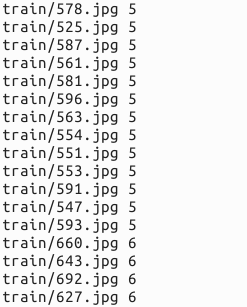
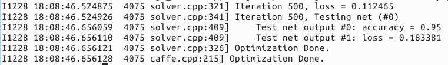

学习caffe的目的，不是简单地做几个练习，最终还是要用到自己实际的项目或科研中。因此，本文介绍一下，从自己的原始图片到lmdb数据，再到训练和测试模型的整个流程。
一、准备数据
有条件的同学，可以去imagenet的官网http://www.image-net.org/download-images，下载imagenet图片来训练。但是我没有下载，一个原因是注册账号的时候，验证码始终出不来(听说是google网站的验证码，而我是上不了google的)。第二个原因是数据太大了。
在网上找了一些其他的图片来代替，共有500张图片，分为大巴车、恐龙、大象、鲜花、马五个类，每个类100张。需要的同学可以去网盘下载：http://pan.baidu.com/s/1nuqlTnN
编号分别以3、4、5、6、7开头，各位一类。从其中每类选出20张作为测试，其余80张作为训练。因此最终训练图片400张，测试图片100张，共5类。将图片放在根目录下的data文件夹下面。即训练图片目录：data/re/train/，测试图片目录：data/re/test/。
二、转换为lmdb格式
具体的转换过程参见上一篇文章。
首先，在examples下面创建一个myfile的文件夹，用来存放配置文件和脚本文件。然后编写一个脚本create_filelist.sh，用来生成train.txt和test.txt清单文件：
# sudo mkdir examples/myfile
# sudo vim examples/myfile/create_filelist.sh
编辑此文件，写入：
#!/usr/bin/env sh
DATA=data/re/
MY=examples/myfile
echo "Create train.txt ..."
rm -rf $MY/train.txt
for i in 3 4 5 6 7
do
find $DATA/train -name $i*.jpg | cut -d '/' -f4-5 | sed "s/$/ $i/">>$MY/train.txt
done
echo "Create test.txt ..."
rm -rf $MY/test.txt
for i in 3 4 5 6 7
do
find $DATA/test -name $i*.jpg | cut -d '/' -f4-5 | sed "s/$/ $i/">>$MY/test.txt
done
echo "All done."
然后运行此脚本
# sudo sh examples/myfile/create_filelist.sh
成功的话，就会在examples/myfile/文件夹下生成train.txt和test.txt两个文本文件，里面就是图片的列表清单。

接着再编写一个脚本文件，调用convert_imageset命令来转换数据格式。
# sudo vim examples/myfile/create_lmdb.sh
插入：
#!/usr/bin/env sh
DATA=data/re
MY=examples/myfile
echo "Create train lmdb ..."
rm -rf $MY/img_train_lmdb
build/tools/convert_imageset \
--shuffle \
--resize_height=256 \
--resize_width=256 \
/home/xxx/caffe-master/data/re/train/ \
$MY/train.txt \
$MY/img_train_lmdb
echo "Create test lmdb ..."
rm -rf $MY/img_test_lmdb
build/tools/convert_imageset \
--shuffle \
--resize_width=256 \
--resize_height=256 \
/home/xxx/caffe-master/data/re/test/ \
$MY/test.txt \
$MY/img_test_lmdb
echo "All done."
因为图片大小不一，因此统一转换成256*256大小。运行成功后，会在examples/myfile下面生成两个文件夹img_train_lmdb和img_test_lmdb，分别用于保存图片转换后的lmdb文件。
三、计算均值并保存
图片减去均值再训练，会提高训练速度和精度。因此，一般都会有这个操作。
caffe程序提供了一个计算均值的文件compute_image_mean.cpp，我们直接使用就可以了。
# sudo build/tools/compute_image_mean examples/myfile/img_train_lmdb examples/myfile/mean.binaryproto
compute_image_mean带两个参数，第一个参数是lmdb训练数据位置，第二个参数设定均值文件的名字保存路径。
运行成功后，会在examples/myfile/下面生成一个mean.binaryproto的均值文件。
四、创建模型并编写配置文件
模型就用程序自带的caffenet模型，位置在models/bvlc_reference_caffenet/文件夹下，将需要的两个配置文件，复制到myfile文件夹内：
# sudo cp models/bvlc_reference_caffenet/solver.prototxt examples/myfile/
# sudo cp models/bvlc_reference_caffenet/train_val.prototxt examples/myfile/
修改其中的solver.prototxt：
# sudo vim examples/myfile/solver.prototxt
net: "examples/myfile/train_val.prototxt"
test_iter: 2
test_interval: 50
base_lr: 0.001
lr_policy: "step"
gamma: 0.1
stepsize: 100
display: 20
max_iter: 500
momentum: 0.9
weight_decay: 0.005
solver_mode: CPU
100个测试数据，batch_size为50，因此test_iter设置为2，就能全cover了。在训练过程中，调整学习率，逐步变小。
修改train_val.prototxt，只需要修改两个阶段的data层就可以了，其他可以不用管。
name: "CaffeNet"
layer {
name: "data"
type: "Data"
top: "data"
top: "label"
include {
phase: TRAIN
}
transform_param {
mirror: true
crop_size: 227
mean_file: "examples/myfile/mean.binaryproto"
}
data_param {
source: "examples/myfile/img_train_lmdb"
batch_size: 256
backend: LMDB
}
}
layer {
name: "data"
type: "Data"
top: "data"
top: "label"
include {
phase: TEST
}
transform_param {
mirror: false
crop_size: 227
mean_file: "examples/myfile/mean.binaryproto"
}
data_param {
source: "examples/myfile/img_test_lmdb"
batch_size: 50
backend: LMDB
}
}
实际上就是修改两个data layer的mean_file和source这两个地方，其他都没有变化。
五、训练和测试
如果前面没有问题，数据准备好了，配置文件也配置好了，这一步就比较简单了：
# sudo build/tools/caffe train -solver examples/myfile/solver.prototxt
运行时间和最后的精确度，会根据机器配置，参数设置的不同而不同。这里实在GPU+cudnn下运行500次，大约8分钟，精度95%。
